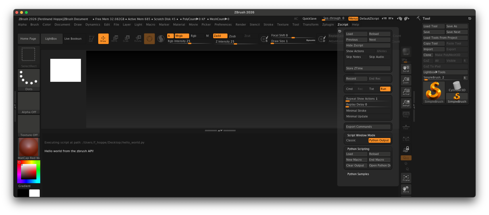
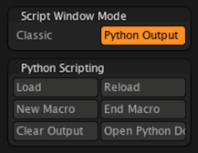
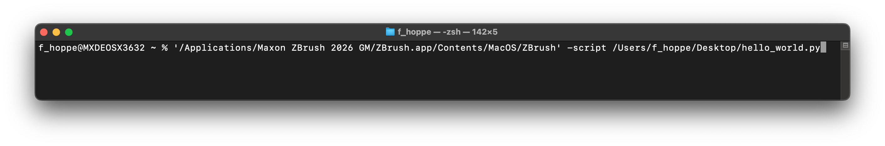
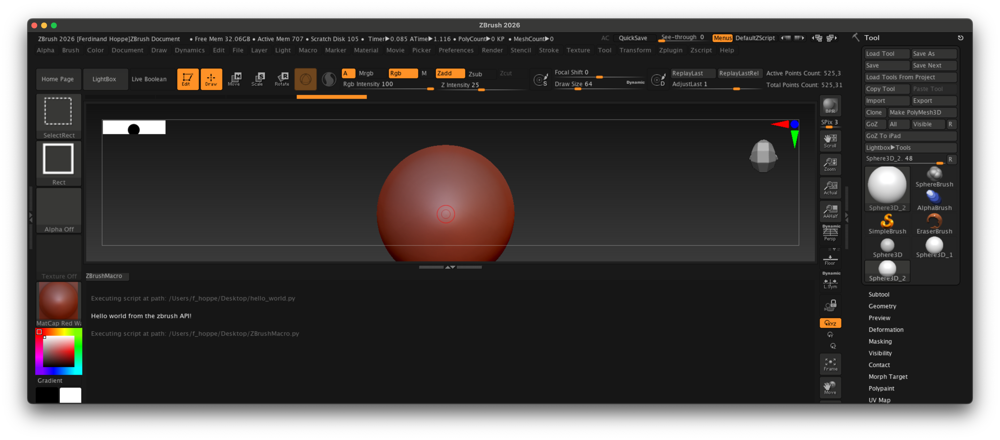
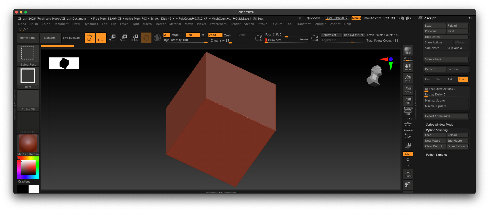

Quickstart¶
Take your first steps with Python scripting in ZBrush.
Scripting Interface¶
The entry point to the Python functionalities in ZBrush is the ZScript palette. Here you can find the Python Scripting sub-palette as well as the Script Window Mode sub-palette where you can enable the Python console output.

Fig. I: The ZBrush UI with the ZScript palette opened and the console unfolded at the bottom.¶
The most important interface elements for Python scripting in ZBrush are summarized below:
ZScript |
This palette in the main menu contains the Python Scripting sub-palette, which provides access to Python-specific commands and functionalities. |
Load |
This button loads a Python script file and executes it. |
Reload |
This button executes the last loaded Python script again. |
New Macro |
This button starts a recording sessions for a Python script. |
End Macro |
This button stops the current Python script recording session and triggers its save dialog. |
Clear Output |
This button clears the output in the Python console. Note that this won’t scroll the console back to the top. So, if you are scrolled very far down, you might not see the top of the console anymore before you scroll back up. |
Open Python Documentation |
This button opens the online documentation for the ZBrush Python SDK in your default web browser. |
Script Window Mode |
This allows you to toggle between the default (Classic) output mode and the Python Output mode. Without changing the mode, you will not see any Python output in the console. |
Tutorial View |
This section at the bottom of the ZBrush UI contains the console of ZBrush and can be toggled with the up/down arrow button at the bottom right of the UI. To see Python console output, you need to enable the Python Output mode in the Script Window Mode sub-palette. The tutorial view |

Fig. II: The most important interface elements for Python scripting in ZBrush.¶
Running Scripts¶
When you have written or obtained a Python script, you can run it in ZBrush in several ways:
Loading |
Click the Load button in the Python Scripting sub-palette, select a Python script file, and it will be executed immediately. |
Reloading |
Click the Reload button in the Python Scripting sub-palette to execute the last loaded script again. |
Command Line |
Scripts can also be executed by passing them as command line arguments when starting ZBrush. This is particularly useful for automating tasks or integrating scripts into larger workflows. The argument is called script and expects the full path to a Python script file. E.g., on Windows it could be: ZBrush.exe -script "C:\path\to\your\script.py" "argument_to_script" "D:\path\to\scene_file.ZPR"
On macOS, one must reach into the application bundle to reach the actual executable, such as: ZBrush.app/Contents/MacOS/ZBrush -script "/path/to/your/script.py" "argument_to_script" "path/to/scene_file.ZPR"
Warning The ZBrush file to load alongside your script is the last argument passed to ZBrush, not the first. See Example mod_subtool_export for a practical example of this. |
Plugins |
Scripts can also be automatically executed as plugins on startup when placed in specific paths, see Environment Variables for more information. |

Fig. II: Running a Python script from the command line on macOS.¶
Recording Scripts¶
One of the strengths of the ZBrush scripting system is the ability to record actions performed in the UI as scripts. This can range from simple tasks such as increasing or decreasing the subdivision level of the current tool, to more complex multi-step task including brush strokes and UI interactions. The table below summarizes the steps to record a Python script in ZBrush.
Warning
There are script recording and loading buttons both for ZScript and Python scripting in the ZScript palette. Make sure to use the buttons in the Python Scripting sub-palette for recording and saving Python scripts.
Start recording |
To start recording a Python script, click the New Macro button in the Python Scripting sub-palette. This will start a new recording session. This will ask you if you want to reinitialize the ZBrush GUI when this script is run. Accepting this can be helpful to ensure a consistent GUI state when the script is executed later. |
Perform actions |
While the recording session is active, perform the actions you want to record in the ZBrush UI. |
Stop recording |
Once you are done, click the End Macro button in the Python Scripting sub-palette. This will stop the recording session and prompt you to save the recorded script to a file. |
Run the script |
You can now run the recorded script by clicking the Load button in the Python Scripting sub-palette and selecting the saved script file. This will not run the script immediately, but place a button in the console area of ZBrush which when clicked will execute the script. |

Fig. III: We recorded a simple script, that selects the Sphere3D tool, draws a sphere on the canvas, enters Edit mode, and then increases the subdivision level. After that we loaded the script with the Load button in the Python Scripting sub-palette. This did not execute the script immediately, but placed a button named ZBrush Macro in the console area. Clicking this button will execute the recorded script.¶
Writing Scripts¶
You can write your first script using any text editor of your choice. Save the file with a .py extension, for example, my_first_script.py. Find below a simple example that creates an editable cube in the center of the canvas and sets up the view. You can then load and run this script using the Load button in the Python Scripting sub-palette.

Fig. IV: The result of running the hello_world.py example.¶
"""Demonstrates how to write a basic script to create an editable cube in the center of the canvas
and sets up the view.
"""
import zbrush.commands as zbc
def main() -> None:
"""Runs when Zbrush executes this script.
"""
# We set ZBrush into its 2026 configuration state, to start with a known UI state.
zbc.config(2026)
# We select the Cube 3D tool and convert it to a polymesh.
zbc.press("Tool:Cube3D")
zbc.press("Tool:Make PolyMesh3D")
# We draw a stroke on the canvas to place the cube. This string is a pre-recorded brush stroke.
stroke: zbc.Stroke = zbc.Stroke(
"(ZObjStrokeV03n27%p2377BA8p191C7ACPnA63An234Fn-BF76s100672Cs100672Cs100672Cz-7E6B=H231V219H230"
"V216H22FV214h22E55v210AAH22Ev20C40h22D40v203C0H22Dv1F980H22DV1EEH22DV1E2h22D40v1D5C0h22DC0v1C9"
"80h22E40v1BD40h22EC0v1B040H22Fv1A280H22Fv19380h22EC0v18480h22DC0v17640h22C40v16980h22A80v15F40"
"h228C0v15740h227C0v15240h22740v14F40h226C0v14D80h22680v14C80h22640v14B80H226v14A80H226v149C0)")
zbc.canvas_stroke(stroke)
# Now we enable edit mode to edit the cube.
zbc.press("Transform: Edit")
# And finally, we rotate the camera into a 45°, 45° angle to get a better view on the cube, and
# then frame the object in the view.
zbc.set_transform(x_rotate=45, y_rotate=45, z_rotate=0)
zbc.press("Transform:Fit Mesh To View")
# This code, the "if _name__ ..." is called the main guard and ensures that the main() function
# is only executed when this script is run directly, not when it is imported as a module.
if __name__ == "__main__":
main()
See also¶
Editor Configuration
Explains how to configure a code editor for ZBrush script development.
API Overview
Explains the conventions and capabilities of the ZBrush API.
Examples
Browse the code examples and fragments of the SDK.
Google Python Class
An excellent free resource from Google to learn Python programming.